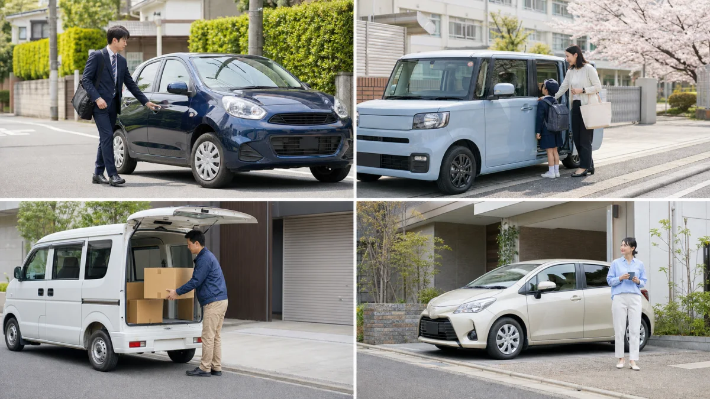
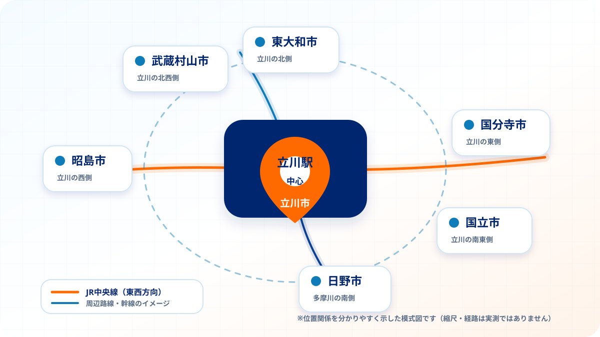

立川市のレンタカー比較ガイド
立川市の格安レンタカーおすすめ10選
【2026年最新】
立川市でレンタカーを探すと、「24時間2,200円〜」「1ヶ月26,400円〜」など、さまざまな料金が見つかります。
ただし、最安料金だけでは、対象車両が2ドアか4ドアか、保険や免責補償が含まれているか、立川市内への配車に対応しているか、故障時に代替車を手配してもらえるかまでは分かりません。
特に1ヶ月以上利用する場合は、数千円の月額差だけでなく、車両クラス、補償、走行距離、受取・返却方法、トラブル時の対応まで確認することが重要です。
この記事では、立川市内に店舗がある、または立川市への配車・引取りに対応しているレンタカー10社を、各社の公式サイト・料金表・利用条件をもとに比較しました。
1日だけ借りたい方から、修理中の代車、納車待ち、通勤、法人の社用車などで1ヶ月以上借りたい方まで、利用期間に合ったサービスを選ぶための参考にしてください。
利用期間によっておすすめのレンタカーは異なる
レンタカーは、利用期間によって料金体系が大きく変わります。
1日料金が安い会社でも、30日分を積み上げると高額になることがあります。
反対に、マンスリー専門のサービスは1日利用には対応していなくても、1ヶ月以上では日額換算を大きく抑えられます。
以下を目安に選びましょう。
| 利用期間 | 選び方 | 主な候補 |
|---|---|---|
| 1日〜3日 |
|
|
| 1週間前後 |
|
|
| 1ヶ月以上 |
|
東京マンスリーレンタカー立川店など |
| 期間が未確定 |
|
東京マンスリーレンタカー立川店 |
※本記事は、各社の公式サイト・料金表・利用条件をもとに当サイトが独自調査したものです。掲載サービスには当サイト運営サービスを含みます。料金・取扱車種・配車条件は、店舗、利用日、契約期間、在庫状況などにより変更される場合があります。
立川市の格安レンタカーおすすめ10選
ここからは、立川市で1ヶ月以上利用する場合の月額料金、車両クラス、受取・配車、保険・補償、トラブル時のサポートをもとに、おすすめ10社を紹介します。
短期利用では、順位が変わる可能性があります。本ランキングは、1ヶ月以上の長期利用を重視した評価です。
1ヶ月以上の長期利用を重視したおすすめランキング
| レンタカー会社名 | おすすめ度 | 1ヶ月料金 | 立川での利用方法 | 主な特徴 |
|---|---|---|---|---|
| おすすめ 東京マンスリーレンタカー立川店 | ★★★★★ | 26,400円〜 | 立川店・受取・配車相談 |
|
| ガッツレンタカー立川店 | ★★★★☆ | 27,280円〜 | 立川店 |
|
| マンスリーゴー | ★★★★☆ | 32,340円〜 | 立川市へ配車 |
|
| GOGOマンスリーレンタカー | ★★★★☆ | 47,800円〜 | 宅配・回収 |
|
| Maverickレンタカー八王子店 | ★★★★☆ | 33,200円〜 | 立川市へ無料配車 |
|
| 東京ビジネスレンタカー | ★★★☆☆ | 軽ワゴン62,000円 | 立川市へ片道3,300円で配車 |
|
| 日本レンタリース東京 | ★★★☆☆ | コンパクト・軽トラック64,900円 | 立川市へ片道3,300円で配車 |
|
| ニコニコレンタカー | ★★★☆☆ | 96,800円〜 | 立川市内に複数店舗 |
|
| ニッポンレンタカー立川北口営業所 | ★★☆☆☆ | 要見積もり | 立川駅北口徒歩5分 |
|
| Jネットレンタカー立川店 | ★★☆☆☆ | 要見積もり | 武蔵砂川駅徒歩13分 |
|
※料金は2026年7月26日時点で、各社公式サイトに掲載されている代表的な1ヶ月料金です。
※車種、ドア数、年式、装備、保険、免責補償、配車料金などの条件は各社で異なります。
※完全に同一条件の料金比較ではないため、契約前に総額をご確認ください。
ランキングの評価基準
本ランキングは、1ヶ月以上利用する方にとっての使いやすさを重視しています。
以下の項目をもとに、当サイト独自基準で評価しました。
| 評価項目 | 評価割合 |
|---|---|
| 1ヶ月利用時の公開料金 | 35% |
| 車両クラスと用途の選びやすさ | 20% |
| 立川市での受取・配車・引取りの利便性 | 15% |
| 保険・車両補償・トラブル時サポート | 20% |
| 料金・利用条件の分かりやすさ | 10% |
1位：東京マンスリーレンタカー（立川店）
| 長期利用おすすめ度 | ★★★★★ |
|---|---|
| 軽自動車 | 1ヶ月26,400円（税込）〜 |
| 軽ワゴン | 1ヶ月29,700円（税込）〜 |
| 広めの軽 | 1ヶ月39,600円（税込）〜 |
| 軽バン・軽トラック | 1ヶ月39,600円（税込）〜 |
| 普通車・エコカー | 1ヶ月69,300円（税込）〜 |
| 店舗 | 東京都立川市曙町2-22-20 |
| 最寄駅 | 立川駅から徒歩6分 |
| 営業時間 | 10:00〜19:00 |
| 配車・引取り | 条件付きで対応 |
| 車両補償 | 車両時価額まで |
| トラブル時 | 指定ロードサービス、代替車手配に対応 |
| 利用期間 | 1ヶ月から、1ヶ月単位で延長可能 |
東京マンスリーレンタカー立川店は、1ヶ月以上の長期利用を前提に、月額料金、車種、受取方法、トラブル時のサポートを整えているレンタカーサービスです。
最も安い軽自動車は1ヶ月26,400円（税込）です。
買い物や通勤だけでなく、毎日の送迎にも使いやすい軽ワゴンは29,700円（税込）から利用できます。
室内空間を重視する場合は、タントやパレットなどの広めの軽自動車を39,600円（税込）から選べます。
荷物運搬や工事、営業用途では、軽バン・軽トラックも39,600円（税込）から利用可能です。
東京マンスリーレンタカーを1位とした主な理由は、最安クラスだけでなく、4人乗りの軽ワゴン、広めの軽、軽バン・軽トラックまで、1ヶ月料金を低く抑えているためです。
立川駅から徒歩6分の店舗で受け取れるほか、指定場所へのお届け・利用終了時の引取りも相談できます。
長期利用中に事故や故障が発生した場合は、指定ロードサービスや代替車の手配について立川店へ直接相談できます。
また、対人賠償、対物賠償に加えて、車両時価額までの車両補償が付帯しています。
累計10,000件以上の貸出実績があり、個人の通勤・送迎だけでなく、修理中の代車、納車待ち、法人の社用車・営業車などにも利用されています。
東京マンスリーレンタカー立川店がおすすめの人
- 1ヶ月以上利用する予定がある
- 2ドアの最安車ではなく、軽ワゴンを安く借りたい
- タントなどの広めの軽自動車を探している
- 軽バンや軽トラックを月単位で借りたい
- 立川駅周辺で受け取りたい
- 指定場所への配車や引取りを相談したい
- 故障時の代替車手配を重視したい
- 修理期間や納車日がまだ決まっていない
- 法人の社用車や営業車として利用したい
車両クラス別に1ヶ月料金を比較
同じ「軽自動車」でも、2ドアの小型車、4ドアの軽ワゴン、室内が広い軽自動車、荷物を運べる軽バンでは、使い勝手も料金も異なります。
各社の最安料金だけではなく、実際に利用したい車両クラスに近い料金を確認しましょう。
最安の軽自動車クラス
| サービス | 車両クラス | 1ヶ月料金（税込） | 補足 |
|---|---|---|---|
| 東京マンスリーレンタカー | Aクラス・軽自動車 | 26,400円 | アルト・ミラ等 |
| ガッツレンタカー | A-1クラス | 27,280円 | 原則2ドアタイプ |
| マンスリーゴー | 軽ミニクラス | 32,340円 | 1ヶ月プラン公式ページの掲載額 |
| Maverickレンタカー | 格安軽自動車 | 33,200円〜 | 補償料別 |
| GOGOマンスリーレンタカー | 軽自動車 | 47,800円 | CDW・立川市の宅配・回収往復を含む |
| ニコニコレンタカー | Kクラス | 96,800円 | 会員料金・マンスリー取扱店限定 |
公開料金だけで見ると、東京マンスリーレンタカーの軽自動車は1ヶ月26,400円（税込）です。
ガッツレンタカーの最安A-1クラスは27,280円（税込）で、原則として2ドアタイプです。
マンスリーゴーは、公式サイト内に軽ミニクラス29,040円（税込）と32,340円（税込）の記載が混在しています。本記事では1ヶ月プランページに掲載された32,340円（税込）を比較に使用しています。
契約期間や対象車両によって料金が変わるため、「月額○円〜」の表示だけではなく、1ヶ月だけ利用する場合の見積額を確認することが重要です。
4ドア軽ワゴンに近いクラス
| サービス | 車両クラス | 1ヶ月料金（税込） | 東京マンスリーレンタカーとの差 |
|---|---|---|---|
| 東京マンスリーレンタカー | Bクラス・軽ワゴン | 29,700円 | 基準 |
| ガッツレンタカー | A-2クラス・4ドア軽 | 37,840円 | 8,140円高い |
| GOGOマンスリーレンタカー | 軽自動車ワゴン | 50,800円 | 21,100円高い |
| マンスリーゴー | 軽ワゴンクラス | 49,500円 | 19,800円高い |
| 東京ビジネスレンタカー | KLクラス | 62,000円 | 32,300円高い |
通勤や送迎などで毎日使う場合は、最安の2ドア車ではなく、4ドアの軽ワゴンを希望する方が多くなります。
東京マンスリーレンタカーの軽ワゴンは1ヶ月29,700円（税込）です。
ガッツレンタカーのA-2クラスと比較すると、1ヶ月で8,140円の差があります。
マンスリーゴーやGOGOマンスリーレンタカーの軽ワゴンクラスと比較すると、1ヶ月で約2万円の差になります。
車両、年式、装備、料金に含まれる補償は異なりますが、4ドアの軽を月単位で安く借りたい方にとって、東京マンスリーレンタカーは有力な選択肢です。
広めの軽自動車クラス
| サービス | 車両クラス | 1ヶ月料金（税込） | 東京マンスリーレンタカーとの差 |
|---|---|---|---|
| 東京マンスリーレンタカー | Cクラス・広めの軽 | 39,600円 | 基準 |
| ガッツレンタカー | A-2プレミアム | 47,520円 | 7,920円高い |
| マンスリーゴー | 軽ボックスクラス | 52,800円 | 13,200円高い |
タント、パレット、N-BOXなどに近い、室内が広い軽自動車を希望する場合も、最安の軽自動車とは料金が異なります。
東京マンスリーレンタカーのCクラスは1ヶ月39,600円（税込）です。
ガッツレンタカーのA-2プレミアムと比べると7,920円、マンスリーゴーの軽ボックスクラスと比べると13,200円低い料金です。
軽バン・軽トラッククラス
| サービス | 車両クラス | 1ヶ月料金（税込） | 東京マンスリーレンタカーとの差 |
|---|---|---|---|
| 東京マンスリーレンタカー | Dクラス・軽バン／軽トラック | 39,600円 | 基準 |
| ガッツレンタカー | Bクラス | 52,800円 | 13,200円高い |
| GOGOマンスリーレンタカー | 商用車ライトバン | 54,800円 | 15,200円高い |
| 東京ビジネスレンタカー | 軽トラック | 53,900円 | 14,300円高い |
| 東京ビジネスレンタカー | 軽バン | 58,500円 | 18,900円高い |
| マンスリーゴー | 軽バンクラス | 62,700円 | 23,100円高い |
| 日本レンタリース東京 | 軽トラック | 64,900円 | 25,300円高い |
建設現場、配送、営業、引っ越し、イベント設営などで軽バンや軽トラックが必要な場合は、会社による料金差がさらに大きくなります。
東京マンスリーレンタカーのDクラスは1ヶ月39,600円（税込）です。
ガッツレンタカーと比べて月額13,200円、GOGOマンスリーレンタカーと比べて月額15,200円、マンスリーゴーの軽バンクラスと比べて月額23,100円の差があります。
1ヶ月だけでも差が大きく、複数月や複数台になると総額差はさらに広がります。
※各社で車種、装備、補償、配車条件が異なります。料金だけでなく、利用条件もあわせて確認してください。
2位：ガッツレンタカー立川店
| 長期利用おすすめ度 | ★★★★☆ |
|---|---|
| 24時間 | 2,200円（税込）〜 |
| 1週間 | 8,580円（税込）〜 |
| 1ヶ月 | 27,280円（税込）〜 |
| 最安クラス | A-1・2ドア軽自動車 |
| 4ドア軽自動車 | A-2・37,840円（税込） |
| 軽バン・軽トラック | Bクラス・52,800円（税込） |
| 店舗 | ガッツレンタカー立川店 |
| 特徴 | 1日、1週間、1ヶ月の各プランに対応 |
ガッツレンタカー立川店は、1日、1週間、1ヶ月の料金プランを用意しているため、利用期間が短い場合にも選びやすいレンタカーです。
最安のA-1クラスは1ヶ月27,280円（税込）ですが、原則として2ドアの軽自動車です。
4ドアの軽自動車を希望する場合はA-2クラスとなり、1ヶ月37,840円（税込）です。
広めの軽に近いA-2プレミアムは47,520円（税込）、軽バン・軽トラックのBクラスは52,800円（税込）となります。
1日や1週間だけ借りたい方には使いやすい一方、1ヶ月以上利用する場合は、最安表示だけではなく、希望する車両クラスの料金を確認しましょう。
3位：マンスリーゴー
| 長期利用おすすめ度 | ★★★★☆ |
|---|---|
| 軽ミニクラス | 1ヶ月32,340円（税込） |
| 軽ワゴンクラス | 1ヶ月49,500円（税込） |
| 軽ボックスクラス | 1ヶ月52,800円（税込） |
| 軽バンクラス | 1ヶ月62,700円（税込） |
| 対応 | 立川市への配車・引取り |
| 特徴 | オンライン手続き、長期専門 |
マンスリーゴーは、東京・神奈川・千葉・埼玉で展開している長期レンタカー専門サービスです。
LINEを中心に手続きを進められ、自宅や指定場所への配車・引取りにも対応しています。
公式サイト内には軽ミニクラス29,040円（税込）と32,340円（税込）の記載が混在していますが、1ヶ月プランページには32,340円（税込）と掲載されています。
立川市向けページでは、12ヶ月利用時の実質月額として29,040円（税込）〜と案内されているため、1ヶ月だけ利用する場合は見積額を確認しましょう。
4位：GOGOマンスリーレンタカー
| 長期利用おすすめ度 | ★★★★☆ |
|---|---|
| 軽自動車 | 立川市・1ヶ月47,800円（税込） |
| 軽ワゴン | 立川市・1ヶ月50,800円（税込） |
| 商用ライトバン | 立川市・1ヶ月54,800円（税込） |
| 配車・回収 | 対応 |
| CDW | 料金に含む |
| 特徴 | 宅配型、料金の分かりやすさ |
GOGOマンスリーレンタカーは、指定場所へ車を届け、利用終了時に回収する宅配型サービスです。
軽自動車の基本料金は1ヶ月45,800円（税込）で、保険料、免責補償料、宅配・回収を含む料金として案内されています。立川市は宅配・回収の往復料金2,000円（税込）が加算され、1ヶ月47,800円（税込）です。
東京マンスリーレンタカーより基本料金は高くなりますが、宅配とCDWを含めた料金の分かりやすさを重視する方には候補になります。
5位：Maverickレンタカー八王子店
| 長期利用おすすめ度 | ★★★★☆ |
|---|---|
| 格安軽自動車 | 月額33,200円（税込）〜 |
| 補償 | 別料金 |
| 立川市への配車 | 無料対応エリア |
| 法人対応 | 請求書・インボイス対応 |
| 特徴 | 法人、納車待ち、代車、三菱車 |
Maverickレンタカー八王子店は、法人利用、納車待ち、車検、社用車入替などを意識した長期プランを用意しています。
格安軽自動車は月額33,200円（税込）からで、補償料は別です。
立川市は無料配車エリアに含まれており、法人名義の請求書やインボイス、損害保険会社への直接精算にも対応しています。
6位：東京ビジネスレンタカー
| 長期利用おすすめ度 | ★★★☆☆ |
|---|---|
| 軽ワゴン | 1ヶ月62,000円（税込） |
| 軽バン | 1ヶ月58,500円（税込） |
| 軽トラック | 1ヶ月53,900円（税込） |
| 立川市への配車 | 片道3,300円（税込） |
| 特徴 | 商用車、トラック、法人利用 |
東京ビジネスレンタカーは、軽自動車だけでなく、商用バン、平トラック、ハイエースなどの業務用車両を幅広く扱っています。
立川市への配車・引取りは、キャンペーン料金として片道3,300円（税込）で案内されています。
料金だけを重視する場合は東京マンスリーレンタカーの方が低価格ですが、特殊な商用車や大型車が必要な法人には選択肢になります。
7位：日本レンタリース東京
| 長期利用おすすめ度 | ★★★☆☆ |
|---|---|
| コンパクトカー | 1ヶ月64,900円（税込） |
| 軽トラック | 1ヶ月64,900円（税込） |
| 立川市への配車 | 片道3,300円（税込） |
| ETC・カーナビ | 標準装備 |
| 特徴 | 法人向け、商用車、トラック |
日本レンタリース東京は、ウィークリー・マンスリーのビジネスレンタカーを中心に展開しています。
コンパクトカーと軽トラックは、いずれも1ヶ月64,900円（税込）です。
立川市への配車・引取りに対応し、片道3,300円（税込）と案内されています。
ETCとカーナビが標準装備で、乗用車、商用車、トラックなど幅広い車種を扱っています。
8位：ニコニコレンタカー
| 長期利用おすすめ度 | ★★★☆☆ |
|---|---|
| Kクラス | 1ヶ月96,800円（税込）・会員料金 |
| Sクラス | 1ヶ月101,200円（税込）・会員料金 |
| 店舗 | 立川市内に複数店舗 |
| 特徴 | 短期からマンスリーまで対応 |
ニコニコレンタカーは、立川市内に複数の店舗があり、1日利用からウィークリー、マンスリーまで幅広く対応しています。
公式の長期レンタル会員料金は、Kクラスが1ヶ月96,800円（税込）、Sクラスが101,200円（税込）です。
店舗数や短期利用のしやすさは魅力ですが、1ヶ月料金ではマンスリー専門サービスとの差が大きくなります。
マンスリーコースの取扱いは店舗ごとに異なるため、利用予定店舗へ確認が必要です。
9位：ニッポンレンタカー立川北口営業所
| 長期利用おすすめ度 | ★★☆☆☆ |
|---|---|
| 1ヶ月料金 | 要見積もり |
| 最寄駅 | 立川駅北口から徒歩5分 |
| 営業時間 | 7:00〜20:00 |
| 特徴 | 駅近、短期利用、ワンウェイ |
ニッポンレンタカー立川北口営業所は、立川駅北口から徒歩5分の場所にあり、朝7時から利用できます。
短期利用や、駅からすぐに出発したい場合には便利です。
一方、今回確認した公式ページでは、固定のマンスリー料金は掲載されていません。
1ヶ月以上利用する場合は、通常料金を積み上げるのではなく、長期見積もりの有無を営業所へ確認しましょう。
10位：Jネットレンタカー立川店
| 長期利用おすすめ度 | ★★☆☆☆ |
|---|---|
| 1ヶ月料金 | 要見積もり |
| 住所 | 立川市砂川町8-54-3 |
| 最寄駅 | 武蔵砂川駅から徒歩13分 |
| 営業時間 | 9:00〜19:00 |
| 定休日 | なし |
| 特徴 | 地域店舗、幅広い車種 |
Jネットレンタカー立川店は、立川市砂川町にある店舗型レンタカーです。
武蔵砂川駅から徒歩13分で、9時から19時まで営業しています。
公式店舗ページでは固定の1ヶ月料金を確認できなかったため、長期利用は個別見積もりとなります。
旅行や数日間の利用では候補になりますが、1ヶ月以上の料金を重視する場合は、マンスリー専門サービスと総額を比較しましょう。
東京マンスリーレンタカーとガッツレンタカーを比較
立川では、東京マンスリーレンタカーとガッツレンタカーのどちらを選ぶか迷う方も多いでしょう。
ガッツレンタカーは1日・1週間・1ヶ月のすべてに対応している点が特徴です。
一方、1ヶ月以上の利用では、最安料金だけでなく、4ドア軽、広めの軽、軽バン・軽トラックの料金差と、トラブル時の対応を確認する必要があります。
| 比較項目 | 東京マンスリーレンタカー立川店 | ガッツレンタカー立川店 |
|---|---|---|
| 最安の軽自動車 | 26,400円（税込） | 27,280円（税込） |
| 最安クラスの特徴 | 軽自動車 | A-1・原則2ドア |
| 4ドア軽ワゴンに近いクラス | 29,700円（税込） | A-2・37,840円（税込） |
| 広めの軽に近いクラス | 39,600円（税込） | A-2プレミアム・47,520円（税込） |
| 軽バン・軽トラック | 39,600円（税込） | Bクラス・52,800円（税込） |
| 車両補償 | 車両時価額まで |
|
| 車両トラブル | 指定ロードサービスの手配に対応 |
|
| 事故・故障時 | 代替車手配に対応 |
|
| 配車・引取り | 条件付きで対応 | 店舗へ要確認 |
| 得意な利用期間 | 1ヶ月以上 | 1日・1週間・1ヶ月 |
1ヶ月以上なら車両クラスをそろえて比較する
ガッツレンタカーの「1ヶ月27,280円〜」は、原則として2ドアのA-1クラスです。
4ドアの軽自動車を希望する場合は、A-2クラスの37,840円（税込）となります。
東京マンスリーレンタカーの軽ワゴンは29,700円（税込）なので、1ヶ月で8,140円の差があります。
軽バン・軽トラックでは、東京マンスリーレンタカーが39,600円（税込）、ガッツレンタカーが52,800円（税込）で、1ヶ月13,200円の差です。
最安料金だけではなく、実際に必要なドア数、室内空間、荷室、用途をそろえて比較しましょう。
長期利用で確認したい補償とトラブル対応
1日だけのレンタカーとは異なり、1ヶ月以上利用する場合は、利用期間中にバッテリー、タイヤ、警告灯、異音、事故などのトラブルが発生する可能性も考えておく必要があります。
通勤、送迎、社用車として毎日使う場合、車が動かなくなると、生活や仕事そのものに影響します。
そのため、月額料金だけでなく、以下を確認しましょう。
- 車両補償が付いているか
- トラブル時にどこへ連絡するか
- ロードサービスを手配してもらえるか
- 車両が使えなくなった場合に代替車を手配してもらえるか
- 店舗から離れた場所でも対応してもらえるか
東京マンスリーレンタカーは車両時価額までの車両補償付き
東京マンスリーレンタカーでは、対人賠償と対物賠償が無制限、人身傷害は1名につき3,000万円、車両補償は車両時価額まで付帯しています。
長期間利用する場合は、対人・対物だけでなく、借りている車両自体に補償があるかも確認しましょう。
車両トラブル時は立川店へ直接相談できる
東京マンスリーレンタカーでは、車両トラブルが発生した場合、立川店へ直接連絡し、指定ロードサービスの手配について相談できます。
バッテリー上がりなどの車両トラブルでも、自分で手配先を一から探すのではなく、まず店舗へ連絡できる体制です。
事故・故障時は代替車の手配に対応
長期利用中に事故や故障で車が使えなくなった場合、東京マンスリーレンタカーでは代替車の手配に対応しています。
通勤、送迎、法人の営業車など、車を使えない期間を作りにくい方にとって重要なポイントです。
立川市で長期レンタカーを選ぶ6つのポイント
1. 「○円〜」の対象車両を確認する
最安料金が2ドアの小型軽自動車なのか、4ドアの軽ワゴンなのかによって、使い勝手は大きく異なります。
料金だけでなく、ドア数、乗車人数、荷室、車両クラスを確認しましょう。
2. 1ヶ月だけ利用する料金を確認する
12ヶ月契約時の実質月額や、複数月割引後の料金が「月額○円〜」として表示されている場合があります。
1ヶ月だけ利用する場合は、実際の契約総額を確認してください。
3. 税込・税抜を統一して比較する
税抜24,000円は税込26,400円です。
複数社を比較する際は、税込価格か税抜価格かをそろえましょう。
4. 保険料だけでなく車両補償も確認する
「保険込み」と書かれていても、対人・対物のみの場合や、車両補償が付いていない場合があります。
事故時に借りている車両へどの補償が適用されるか確認しましょう。
5. 配車・引取りの料金を確認する
自宅や職場まで届けてもらえるサービスでも、片道料金、往復料金、距離料金が別途必要になる場合があります。
店舗での受取と配車の両方を比較してください。
6. 故障時の代替車対応を確認する
1ヶ月以上利用する場合、故障や事故で車が使えなくなった際の対応は重要です。
代替車の有無、ロードサービス、連絡先、対応エリアを確認しておきましょう。
立川でマンスリーレンタカーが必要になるケース

車の修理中や事故後の代車
修理に数週間から数ヶ月かかる場合、日単位のレンタカーを延長し続けるより、マンスリープランの方が料金を抑えやすくなります。
新車・中古車の納車待ち
車を購入したものの、納車まで1ヶ月以上かかる場合のつなぎとして利用できます。
納車日が前後する可能性がある場合は、延長について事前に相談しましょう。
通勤・通学・子どもの送迎
毎日使う場合は、最安の2ドア車だけでなく、乗り降りしやすい軽ワゴンや広めの軽自動車も候補になります。
法人の社用車・営業車
新入社員の増員、期間限定プロジェクト、営業エリアの拡大、既存社用車の修理など、必要な期間だけ車両を追加できます。
建設・工事・配送
工具、資材、商品を運ぶ場合は、軽バンや軽トラックの月額料金を比較しましょう。
複数台利用では、1台あたりの月額差が総額へ大きく影響します。
一時的な転居・長期滞在
単身赴任、一時帰国、家族の介護、長期出張などで数ヶ月だけ車が必要な場合にも利用できます。
立川エリアは駅周辺と市内移動で交通手段を使い分ける

立川駅にはJR中央線、青梅線、南武線などが乗り入れ、多摩モノレールも立川南駅・立川北駅を経由しています。
駅周辺は鉄道で移動しやすい一方、立川市北部や周辺の昭島市、日野市、国立市、国分寺市、東大和市、武蔵村山市などを複数地点移動する場合は、車が便利です。
立川市では、利用者減少や運転手不足を背景に路線バスの減便が進むなど、地域公共交通を取り巻く状況も変化しています。
通勤先、工事現場、取引先、送迎先などが駅から離れている場合は、月単位で車を確保することで毎日の移動を安定させやすくなります。
東京マンスリーレンタカー立川店の利用の流れ
-
STEP1｜問い合わせ
電話、メール、LINEから、利用開始日、利用期間、希望車種、受取場所をお知らせください。
原則30分以内に、空車状況と料金をご案内します。
-
STEP2｜車両と総額を確認
希望条件に合う車両、1ヶ月の料金、オプション、受取方法を確認します。
-
STEP3｜予約
料金と契約内容を確認し、問題がなければ予約を確定します。
-
STEP4｜貸出
立川店での受取、立川駅周辺での受取、指定場所へのデリバリーなど、事前に決めた方法で貸出します。
-
STEP5｜返却または延長
利用終了時は店舗返却または出張引取りを選べます。
延長を希望する場合は、次の予約状況を確認したうえで1ヶ月単位で手続きを行います。
立川市の格安レンタカーに関するよくある質問
はい。
東京マンスリーレンタカー立川店は、1ヶ月から利用できます。
1ヶ月以上になる可能性がある場合も、予定期間をもとにご相談ください。
東京マンスリーレンタカー立川店では、軽自動車を1ヶ月26,400円（税込）から利用できます。
車両クラス、利用開始日、配車、オプションなどにより総額は異なります。
立川駅周辺での受け渡しにも対応しています。
具体的な場所と時間は、予約時にご案内します。
条件付きで車両のお届けに対応しています。
希望する住所、利用期間、車両クラスをお知らせください。
はい。
予定している期間をもとにご相談いただけます。
延長の可能性がある場合は、早めにお知らせください。
個人・法人のどちらでも利用できます。
通勤、送迎、修理中の代車、社用車、営業車、期間限定プロジェクトなどに対応しています。
対人賠償、対物賠償、人身傷害、車両補償が付帯しています。
任意の免責補償制度や一部オプションは別料金です。
まず立川店へ連絡してください。
指定ロードサービスや代替車の手配についてご案内します。
希望する車両クラスはお伺いできますが、特定の車種を確約できない場合があります。
軽自動車、軽ワゴン、広めの軽、軽バン、軽トラックなど、希望用途をお知らせください。
1ヶ月3,000kmまでの走行距離制限があります。
超過した場合は、1kmにつき11円（税込）の超過料金が発生します。
空車状況と次の予約状況によっては、1ヶ月単位で延長できます。
延長の可能性がある場合は、予定が分かった時点でご相談ください。
利用開始日は空車状況や契約手続きによって異なります。
希望日をお知らせいただければ、最短で案内できる日程を確認します。
立川市で1ヶ月以上借りる際の比較ポイント
立川市には、1日利用に強い店舗型レンタカー、1週間料金が安い格安レンタカー、配車に対応する宅配型レンタカー、1ヶ月以上に特化したマンスリーレンタカーがあります。
1ヶ月以上利用する場合は、「月額○円〜」だけで決めず、対象車両、4ドアかどうか、補償、配車、ロードサービス、代替車対応まで確認しましょう。
東京マンスリーレンタカー立川店は、軽自動車を1ヶ月26,400円（税込）、軽ワゴンを29,700円（税込）、広めの軽と軽バン・軽トラックを39,600円（税込）から利用できます。
立川駅から徒歩6分の店舗で受け取れるほか、配車・引取り、車両トラブル時のロードサービス、事故・故障時の代替車手配にも対応しています。
修理中、納車待ち、通勤、送迎、法人の社用車などで1ヶ月以上の車が必要な方は、希望条件を立川店へお知らせください。
調査方法・出典
各社の料金、店舗、配車、車両クラス、補償等は、各社の公式サイト、公式料金表、利用規約をもとに確認しました。
料金は可能な限り税込へ統一しています。
料金条件がそろわない項目については、無理に同一条件として扱わず、補足を記載しています。
公式情報確認日：
- 東京マンスリーレンタカー
- 東京マンスリーレンタカー立川店
- ガッツレンタカー A-1クラス
- マンスリーゴー
- マンスリーゴー マンスリープラン
- マンスリーゴー 立川市
- GOGOマンスリーレンタカー
- GOGOマンスリーレンタカー 立川市
- Maverickレンタカー八王子店
- 東京ビジネスレンタカー
- 日本レンタリース東京
- ニコニコレンタカー 長期レンタル
- ニッポンレンタカー 立川
- Jネットレンタカー立川店
- 立川市の概要
- 立川市地域公共交通計画
- 公開日：
- 最終更新日：
- 料金・サービス調査日：